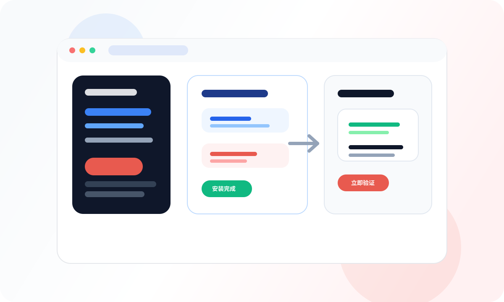

Step 1
看到搜索结果
先挑名字直白的结果
第一次别选描述抽象的 Skill，先选你一眼就知道它是干什么的那一个。
ClawStart Skills 实操
第一次不要追求装很多。先选一个马上能用到的 Skill，完整走通搜索、安装、验证这条链路。

先做一个选择
步骤 1
步骤 2
第一次别选描述抽象的 Skill，先选你一眼就知道它是干什么的那一个。
真正的目标不是“它出现在列表里了”，而是你接下来能立刻用一句话验证它。
只要能稳定完成一次调用，它才真正开始从“看起来有用”变成“我以后还会用”。
天气类最适合作为第一次验证 Skill 是否真的生效的起点。
npx clawhub@latest install weather更贴近中国大陆用户的第一批搜索场景，适合查实时资料和中文内容。
npx clawhub@latest install baidu-search如果你更关心总结网页、PDF 或音视频内容，这个 Skill 往往比纯搜索更实用。
npx clawhub@latest install summarize如果你是开发者或半技术用户，仓库类 Skill 最容易马上看出“装前和装后”的差别。
npx clawhub@latest install github步骤 3
装完不要停在“我已经装上了”。马上提一个最短问题，验证这个 Skill 是不是真的能帮到你。
步骤 4
通常是网络、权限、registry 或依赖问题，优先去排障页查 Skill 安装失败类问题。
先把提问缩短、缩具体，优先问一个最容易判断成功与否的问题。
不用纠结，第一次试错很正常。回去看推荐清单，换一个更直接的 Skill 即可。
什么时候不值得继续装
你只需要完成一次搜索、一次安装、一次验证，这就已经比“知道有 Skill 但从没动手”更进一步了。
继续阅读
安装不是终点。真正有价值的是装完就用、用完就沉淀成固定流程，这样 ClawStart 才会从“尝鲜工具”变成稳定帮手。
如果你装完发现选错方向，先回去重新按内容、办公、开发场景筛一次更适合的 Skill。
下一篇开始把第一次有效的 Skill 用法固定下来，逐步升级成更稳定的工作方式。
如果你装完这一个以后想继续扩展，就去 Skills Hub 按中文分类继续选下一批真实 Skill。
继续去 Skills Hub →如果你已经能稳定用一个 Skill，就可以看看怎样把高频任务固定成工作流。
看工作流模板 →如果你想立刻验证这个 Skill 值不值得留，用任务模板去复跑一次会最直观。
回任务模板验证 →如果装上了但报错多、调用不稳，先把 Skill 安装和运行问题排掉，再继续往下学。
遇到问题？去排障 →添加后可获得1对1答疑支持，优先解决安装和配置问题

打开微信/QQ扫码即可加入